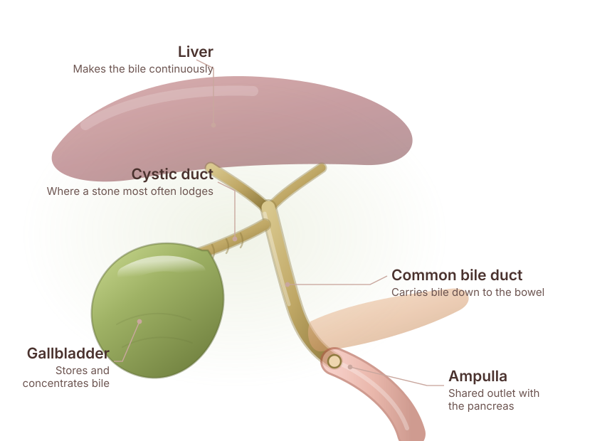

Persistent right upper pain
Pain under the right ribs that is constant rather than coming in attacks.
Specialised evaluation, staging and surgical treatment planning for gallbladder cancer, including cancer found unexpectedly after gallbladder removal.
Send your reports before you travel — they are reviewed ahead of the consultation.

Gallbladder cancer starts in the wall of the gallbladder. It is uncommon in much of the world but is seen more often in northern and eastern India, and long-standing gallstones and chronic inflammation are recognised associations.
Its difficulty is that early gallbladder cancer produces the same symptoms as gallstones, or none at all. A proportion of cases are found only when the pathologist examines a gallbladder that was removed for what everyone believed were stones — an incidental gallbladder cancer.
Because the gallbladder sits directly against the liver with only a thin wall between them, how far the tumour has grown through that wall is central to what treatment is appropriate.
These overlap heavily with ordinary gallstone disease, which is why persistent or changing symptoms deserve a proper look.
Pain under the right ribs that is constant rather than coming in attacks.
Yellow eyes or skin, dark urine, pale stools — needs prompt assessment.
Weight loss or loss of appetite alongside abdominal symptoms.
A mass that can be felt below the right ribs.
An ultrasound reporting wall thickening, a polyp above a certain size, or a mass.
Cancer reported on the pathology of a gallbladder already removed — this needs specialist review.
Staging decides everything here: how deep into the wall the tumour has grown, and whether the liver bed or the nodes are involved.
Which tests apply to your case is a clinical decision made after you have been examined and your existing reports reviewed.
Symptoms, gallstone history and any previous gallbladder surgery are reviewed.
Usually the first test, showing wall thickening, a polyp or a mass.
Defines the extent of the tumour, involvement of the liver bed, the bile ducts and the lymph nodes.
Blood tests, and where needed further imaging or tissue sampling to complete staging.
The stage, your fitness and any previous surgery determine what is offered and in what order.
Treatment depends on the stage: how deeply the tumour has grown into the gallbladder wall, whether it has reached the liver bed or the lymph nodes, and whether it has spread further.
Very early tumours confined to the inner layer may be adequately treated by removal of the gallbladder alone. More advanced tumours usually require a larger operation, and chemotherapy may form part of the plan before or after surgery.
If cancer was found unexpectedly on the pathology of a gallbladder removed for stones, the question is whether a second, more extensive operation is needed. That is a specialist decision and it is time-sensitive, so bring the histopathology report to the consultation.
No procedure is promised in advance of an assessment. What is appropriate for you is decided after examination and a review of your investigations.
Surgery for gallbladder cancer usually means more than removing the gallbladder. A radical or extended cholecystectomy removes the gallbladder together with the adjacent wedge of liver it sits against and the lymph nodes that drain the area.
Where the bile duct is involved, part of it may need to be removed and reconstructed. What is appropriate is decided on the imaging and, where relevant, on the pathology from earlier surgery.
Cancer found on routine gallbladder pathology is assessed as a priority.
Liver bed resection and lymph node clearance as one planned operation.
Gallbladder cancer is seen more often in this part of India, and treated here accordingly.
Chemotherapy considered as part of the plan rather than as an afterthought.

Pancreato-Biliary & Gastrointestinal Surgery
Dr. Deeksha Kapoor is a pancreato-biliary and gastrointestinal surgeon with training in advanced surgical oncology and minimally invasive surgery, from institutions in India, Japan, Germany and France. She leads the PancreaCare+ programme at Advitya Healthcares.
Gallbladder cancer is common in this region and unforgiving of a non-specialist operation. It is managed here within a pancreato-biliary practice, including the cases discovered only on the pathology of a routine cholecystectomy.
From the first consultation through to follow-up, so you know what each stage involves before you commit to it.
Symptoms, gallstone history and any gallbladder surgery already performed.
Ultrasound, then contrast CT or MRI to define the tumour and the liver bed.
Nodes, ducts and distant spread assessed, with tissue sampling where it is needed.
Radical surgery, completion surgery after an incidental cancer, or chemotherapy first.
Radical cholecystectomy with liver bed resection and node clearance, extended where the duct is involved.
Pathology reviewed, adjuvant treatment considered, and surveillance imaging scheduled.
Advitya Healthcares works through alliance partners in Ranchi, Khunti and Kolkata, so treatment is delivered close to home wherever possible.
Gallstones and long-standing inflammation are recognised associations, but the great majority of people with gallstones never develop gallbladder cancer.
Usually with ultrasound followed by contrast CT or MRI to establish the extent. Some cases are diagnosed only on the pathology of a gallbladder removed for presumed stone disease.
Bring the histopathology report for specialist review. Depending on how deeply the tumour had grown, a further operation may be advised, and the timing of that assessment matters.
For the earliest tumours it can be. Beyond that, a radical cholecystectomy that includes the adjacent liver bed and the draining lymph nodes is usually required.
It may be, before or after surgery, depending on the stage and the pathology. This is decided as part of the overall plan rather than in isolation.
Some steps, such as a staging laparoscopy, are done this way. The definitive resection is most often open, and the approach is chosen on oncological grounds.
Ultrasound, CT or MRI images on disc, the histopathology report if your gallbladder has already been removed, previous operation notes, and your medication list.
If cancer was reported on a gallbladder already removed, bring the histopathology report. Whether further surgery is needed — and how quickly — depends on what it says.
Medical disclaimer. The information provided on this page is for educational purposes only and should not be considered a substitute for professional medical advice, diagnosis or treatment. Treatment options may vary depending on individual clinical evaluation.